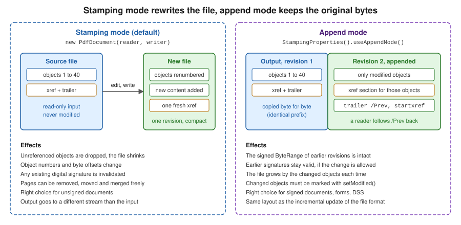

Manipulating Existing PDFs
|
This content was generated with the assistance of AI and should be verified against the official documentation before being relied on in production. |
Most business PDFs are not created from nothing. An invoice arrives from a billing run and must be stamped as paid, a month of
invoices must be concatenated into a single archive, a scanned contract must be cut into one file per customer, and a
letterhead must be placed under every page. All of these start from a file that already exists, and in iText 9 they are done
with the same three classes that create new documents: PdfReader, PdfWriter and PdfDocument, plus the helpers
PdfMerger and PdfSplitter. This page shows each operation on the Bookshelf Billing invoices, explains the two ways
iText can write the result (stamping mode and append mode), and states what replaced the classes that older books and
tutorials use. Versions are stated as of 2026-10-09: iText Core 9.8.0 on Java 21, and every example below was compiled and run
against exactly that version; the produced files were then re-read to check page counts, page order, extracted text and, for
append mode, that the original bytes are still the prefix of the result.
The three classes themselves, and why a PdfDocument must always be closed, are described in
Document Lifecycle. The file-format background of this page, in
particular the incremental update that append mode relies on, is in
How a PDF File Works. The module that owns each
class used here (kernel for almost everything, forms for PdfPageFormCopier) is mapped in
iText Architecture & Modules.
What replaced PdfStamper, PdfCopy and PdfCopyFields (O3)
Books written for iText 1 and 2, including the classic 2006 text iText in Action (consulted for the concept order of this page and not reproduced), manipulate existing files with three families of classes that no longer exist:
-
PdfStamper, created withnew PdfStamper(reader, outputStream), to add content to the pages of a file. ItsgetOverContent(page)andgetUnderContent(page)returned a canvas above or below the existing content, and a boolean constructor argument chose the append mode. -
PdfCopyandPdfSmartCopy, together withPdfCopyFields, to concatenate documents and to merge their form fields, imported withgetImportedPage. -
PdfReader.selectPagesto keep only some pages of a reader, usually followed by a stamper or copier.
iText 7, 8 and 9 are a rewrite, and each of those jobs maps to an object model that is less special-cased. There is one
PdfDocument, and the choice between "create", "stamp" and "copy" is made by which constructor you call and which methods you use:
| Old class or call | Current approach | Where on this page |
|---|---|---|
|
|
Stamping mode |
|
|
Append mode |
|
|
Adding content to existing pages |
|
|
Merging and copying pages |
|
|
Splitting |
|
|
N-up, tiling and superimposing |
The iText Knowledge Base chapters on manipulating and reusing existing documents show the same concepts with a few older method names (for example a tutorial may still call a constructor that was renamed in iText 8 or 9). Where a tutorial and the compiled 9.8.0 API differ, the examples on this page follow the compiled API, which is also the one documented on the 9.8.0 Javadoc page of PdfDocument.
All classes of this page belong to iText Core, which is released under the AGPLv3 or under a commercial licence. The first example repeats the Maven coordinates; the other examples on this page reuse them.
The shared test input
Each example needs a small input file. The helper below creates a multi-page placeholder invoice with the layout Document from
the previous pages, so that every program can be run on its own. It is the only code on this page that creates a PDF from
nothing.
<dependency>
<groupId>com.itextpdf</groupId>
<artifactId>itext-core</artifactId>
<version>9.8.0</version>
<type>pom</type>
</dependency>
<dependency>
<groupId>com.itextpdf</groupId>
<artifactId>bouncy-castle-adapter</artifactId>
<version>9.8.0</version>
</dependency>The adapter is only needed when a file is encrypted or signed (see below); the examples in the rest of this page were run with
itext-core alone. The artifact itext-core is released under the AGPLv3 or under a commercial licence, and so is the
adapter.
package com.example.billing;
import com.itextpdf.kernel.pdf.PdfDocument;
import com.itextpdf.kernel.pdf.PdfWriter;
import com.itextpdf.layout.Document;
import com.itextpdf.layout.element.AreaBreak;
import com.itextpdf.layout.element.Paragraph;
import com.itextpdf.layout.properties.AreaBreakType;
import java.io.IOException;
import java.nio.file.Files;
import java.nio.file.Path;
/** Creates small multi-page invoices used as input by the manipulation examples. */
public final class SampleInvoices {
private SampleInvoices() {
}
public static Path create(Path target, String invoiceNumber, int pages) throws IOException {
Files.createDirectories(target.toAbsolutePath().getParent());
try (var document = new Document(new PdfDocument(new PdfWriter(target.toString())))) {
for (int page = 1; page <= pages; page++) {
if (page > 1) {
document.add(new AreaBreak(AreaBreakType.NEXT_PAGE));
}
document.add(new Paragraph("Bookshelf Billing - invoice " + invoiceNumber + ", sheet " + page));
document.add(new Paragraph("Line items for sheet " + page + " (placeholder data)"));
}
}
return target;
}
}This helper follows the Java 21 style used throughout: try-with-resources with the layout Document, Path instead of
java.io.File, and var for obvious local types. The Java 21 idioms for manipulation code are collected in a section
further down.
Stamping mode: reading one file and writing another
The constructor new PdfDocument(PdfReader, PdfWriter) opens the source file for reading and a second, independent output for
writing. This is called stamping mode. iText reads the source, lets you change anything reachable from the document
catalog (pages, content, metadata, annotations, form fields), and on close() writes a complete new file. The source is never
modified, which is why the output must go to a different file or stream. The new file is a single revision: iText renumbers
the objects it writes, normally leaves out objects that are no longer reachable from the catalog, and emits one fresh
cross-reference section. The file is therefore usually compact, but it is not related byte by byte to the original, and any
digital signature in the source stops being valid because the signed bytes are gone.
Adding content to existing pages
The existing content of a page is one or more content streams. To add something you do not edit those streams: you add another
stream before or after them and draw into it with a PdfCanvas.
-
page.newContentStreamAfter()appends a stream drawn on top of the existing content, which is right for stamps, "PAID" marks, page numbers and signatures. -
page.newContentStreamBefore()inserts a stream drawn underneath, which is right for backgrounds and letterheads.
The canvas needs the page resources (page.getResources()) so that fonts and graphics states you register are added to the
page’s own resource dictionary, and the PdfDocument so that the fonts are written to the output. When the added content is
text with layout (alignment, wrapping, a font family), wrap the same canvas in the layout com.itextpdf.layout.Canvas with a
rectangle: the layout engine then works inside that rectangle, as the footer in the example does.
The example below stamps each page of an invoice with a translucent "PAID" watermark rotated by 45 degrees and a "Page X of Y" footer. In stamping mode the total page count is known before any page is written, because the whole document is already loaded, so there is no need for the placeholder technique that a document under construction needs for "Page X of Y"; the page events page of this section covers that case.
package com.example.billing;
import com.itextpdf.kernel.colors.ColorConstants;
import com.itextpdf.kernel.font.PdfFontFactory;
import com.itextpdf.kernel.geom.Rectangle;
import com.itextpdf.kernel.pdf.PdfDocument;
import com.itextpdf.kernel.pdf.PdfPage;
import com.itextpdf.kernel.pdf.PdfReader;
import com.itextpdf.kernel.pdf.PdfWriter;
import com.itextpdf.kernel.pdf.canvas.PdfCanvas;
import com.itextpdf.kernel.pdf.extgstate.PdfExtGState;
import com.itextpdf.layout.Canvas;
import com.itextpdf.layout.element.Paragraph;
import com.itextpdf.layout.properties.TextAlignment;
import com.itextpdf.layout.properties.VerticalAlignment;
import java.io.IOException;
import java.nio.file.Path;
public final class StampExistingInvoice {
public static void main(String[] args) throws IOException {
Path source = SampleInvoices.create(Path.of("target/out/invoice-2026-0042.pdf"), "2026-0042", 3);
Path target = Path.of("target/out/invoice-2026-0042-paid.pdf");
// Stamping mode: read the source, write a brand-new file containing the old content plus the changes.
try (var pdf = new PdfDocument(new PdfReader(source.toString()), new PdfWriter(target.toString()))) {
var font = PdfFontFactory.createFont(); // Helvetica, one of the standard 14 fonts
int total = pdf.getNumberOfPages();
for (int number = 1; number <= total; number++) {
PdfPage page = pdf.getPage(number);
Rectangle box = page.getPageSize();
// newContentStreamAfter() puts the stamp on top of the existing content,
// newContentStreamBefore() would put it underneath.
var canvas = new PdfCanvas(page.newContentStreamAfter(), page.getResources(), pdf);
// 1. A translucent "PAID" watermark rotated 45 degrees across the page.
canvas.saveState()
.setExtGState(new PdfExtGState().setFillOpacity(0.2f))
.beginText()
.setFontAndSize(font, 96)
.setFillColor(ColorConstants.RED)
.setTextMatrix((float) Math.cos(Math.PI / 4), (float) Math.sin(Math.PI / 4),
(float) -Math.sin(Math.PI / 4), (float) Math.cos(Math.PI / 4),
box.getWidth() / 4, box.getHeight() / 4)
.showText("PAID")
.endText()
.restoreState();
// 2. "Page X of Y" in the bottom margin, using the layout Canvas on the same content stream.
var footer = new Rectangle(box.getLeft() + 36, box.getBottom() + 18, box.getWidth() - 72, 20);
try (var layoutCanvas = new Canvas(canvas, footer)) {
layoutCanvas.add(new Paragraph("Page " + number + " of " + total)
.setFontSize(9)
.setTextAlignment(TextAlignment.CENTER)
.setVerticalAlignment(VerticalAlignment.BOTTOM));
}
}
}
System.out.println("Stamped " + target);
}
}The example uses the standard Helvetica font, one of the standard 14 fonts that every viewer provides. A stamp in any other script needs an embedded font, as described in Fonts & Unicode. Colours and images placed with the same canvas are covered in Colours, Images & SVG, and the layout elements that can be added to the layout canvas are described in Layout Elements.
The official tutorial this example derives from is iText KB, chapter 5: Manipulating an existing PDF document.
Editing the page tree
Pages are first-class objects of a stamping-mode document, so reorganising them is a method call:
-
removePage(int)andremovePage(PdfPage)drop a page; -
movePage(int from, int to)changes the order; -
addNewPage(int index, PageSize)inserts a blank page at a given position; -
page.setRotation(int)writes a/Rotateentry (a multiple of 90) and leaves the content untouched; -
page.setCropBox(Rectangle)changes the visible region without removing anything.
Removing a page does not destroy information on its own: resources that only that page used become unreachable and are not
written, but a bookmark or a link that pointed at it is not rewritten for you. The example removes one sheet, moves another,
rotates a page and inserts a cover page, filled with a layout Canvas on the new page rather than with a Document, because
a Document appends to the last page of the file.
package com.example.billing;
import com.itextpdf.kernel.geom.PageSize;
import com.itextpdf.kernel.pdf.PdfDocument;
import com.itextpdf.kernel.pdf.PdfReader;
import com.itextpdf.kernel.pdf.PdfWriter;
import com.itextpdf.layout.Canvas;
import com.itextpdf.layout.element.Paragraph;
import java.io.IOException;
import java.nio.file.Path;
public final class EditPagesInStampingMode {
public static void main(String[] args) throws IOException {
Path source = SampleInvoices.create(Path.of("target/out/edit-source.pdf"), "2026-0600", 4);
Path target = Path.of("target/out/edit-result.pdf");
try (var pdf = new PdfDocument(new PdfReader(source.toString()), new PdfWriter(target.toString()))) {
pdf.removePage(2); // drop the second sheet
pdf.movePage(3, 1); // the last sheet becomes the first
pdf.getPage(2).setRotation(90); // rotate one page (a /Rotate entry, no content change)
// Add a cover page in front and fill it with layout elements through a Canvas.
var cover = pdf.addNewPage(1, PageSize.A4);
try (var canvas = new Canvas(cover, cover.getPageSize().clone().applyMargins(36, 36, 36, 36, false))) {
canvas.add(new Paragraph("Bookshelf Billing - archive copy"));
}
}
System.out.println("Written " + target);
}
}Run on a four-sheet invoice, the result has the cover page first, then sheet 4 (moved to the front), the rotated sheet 1 and
sheet 3; sheet 2 is gone. Page numbers in getPage(int) are always 1-based and refer to the document as it is at that moment,
so the example takes the rotation target after the move.
The same Knowledge Base chapter introduces these operations; its page-level examples were checked against the 9.8.0 method names above.
Append mode: keeping the original bytes
Stamping mode produces a new file. Append mode produces an update of the old one. You request it with
StampingProperties:
new PdfDocument(reader, writer, new StampingProperties().useAppendMode());In append mode iText first copies the whole source file to the output unchanged, then writes only the objects that you
modified, a cross-reference section for those objects and a new trailer whose /Prev entry points at the previous
cross-reference section. This is exactly the incremental update described in the file-structure page of this section, and it
has the same properties:
-
The bytes of the earlier revisions never change. A digital signature covers a byte range of the file, so signatures that were valid before the update remain intact, provided the change is one that the signature’s certification level allows (filling a form or adding an annotation after a certifying signature may be allowed, rewriting the content is not).
-
The file only grows. Every append adds the changed objects and a cross-reference section, so repeated appends accumulate history. The history can be examined and, for a document that was edited by mistake, an earlier revision can be recovered, which is a reason to avoid append mode for a document from which sensitive content has to be removed.
-
Only objects that changed are written. iText marks an object as modified when you change it through its API (adding a content stream, setting an info entry, changing a form field value). When you take a low-level
PdfDictionaryorPdfArrayand mutate it directly, you must callsetModified()on the object that holds the change, or it is not written in append mode.

The figure complements the incremental-update figure of the file-structure page: that one shows three revisions as they sit in a file, this one shows what the writer does with the source in each mode. The example below applies the same style of change as before (a rectangle stamped on the first page and a changed document-information subject) in append mode, then compares the first bytes of the result with the original.
package com.example.billing;
import com.itextpdf.kernel.pdf.PdfDocument;
import com.itextpdf.kernel.pdf.PdfReader;
import com.itextpdf.kernel.pdf.PdfWriter;
import com.itextpdf.kernel.pdf.StampingProperties;
import com.itextpdf.kernel.pdf.canvas.PdfCanvas;
import java.io.IOException;
import java.nio.file.Files;
import java.nio.file.Path;
import java.util.Arrays;
public final class AppendModeStamp {
public static void main(String[] args) throws IOException {
Path source = SampleInvoices.create(Path.of("target/out/invoice-2026-0043.pdf"), "2026-0043", 2);
Path target = Path.of("target/out/invoice-2026-0043-appended.pdf");
// Append mode: the original bytes are copied verbatim and only changed objects follow them.
try (var pdf = new PdfDocument(new PdfReader(source.toString()), new PdfWriter(target.toString()),
new StampingProperties().useAppendMode())) {
pdf.getDocumentInfo().setSubject("Reviewed by accounting");
var page = pdf.getFirstPage();
new PdfCanvas(page.newContentStreamAfter(), page.getResources(), pdf)
.rectangle(36, 36, 120, 24)
.stroke();
}
byte[] before = Files.readAllBytes(source);
byte[] after = Files.readAllBytes(target);
boolean prefix = Arrays.equals(before, Arrays.copyOf(after, before.length));
System.out.println("original: " + before.length + " bytes, appended: " + after.length
+ " bytes, original bytes untouched: " + prefix);
}
}On the test input the original file was 1574 bytes, the appended file 2433 bytes, and the check that the first 1574 bytes of
the result equal the original printed true. That byte-for-byte prefix is what makes append mode the only correct choice for a
document that is already signed, and the one used by iText’s signing classes and by the DSS (validation data) updates that
long-term validation needs: they are described in the signing pages of this section.
Two more StampingProperties options matter when the source is protected:
-
preserveEncryption()defines that the encryption of the original document, if it had any, is kept in the output; leave it out and you must configure the encryption of the result yourself. -
disableMac()disables the MAC token (the PDF 2.0 message authentication code of encrypted documents) in the output.
Passwords are supplied to ReaderProperties (new PdfReader(path, new ReaderProperties().setPassword(bytes))); the bytes
come from configuration or an environment variable, never from source code. Encryption and permissions are covered in
their own page of this section.
Choosing between the two modes
| Question | Stamping mode | Append mode |
|---|---|---|
Is the source file signed or certified? |
The signature is invalidated |
Earlier signatures stay valid if the update is permitted |
Do you need to remove pages, remove sensitive content or shrink the file? |
Yes, unreachable objects are not written |
No, the old bytes stay in the file |
How large is the output compared with the input? |
Similar, sometimes smaller |
Always larger by the changed objects |
Can the source and output be the same file? |
No, different streams |
No, but the output starts with the source bytes |
Typical use |
Watermark, merge, split, reorder, export |
Fill a form, add an annotation, add a signature, add validation data |
Merging documents with PdfMerger
Merging is the operation older books spend most time on: PdfCopy for plain concatenation, PdfSmartCopy to detect repeated
resources, and PdfCopyFields to merge the AcroForms of several files. In iText 9 the same work is done by
com.itextpdf.kernel.utils.PdfMerger, which wraps a destination PdfDocument and appends page ranges of other documents to it.
PdfMerger takes an optional PdfMergerProperties object. Its four switches decide what is merged along with the pages:
-
setMergeTags(boolean)merges the logical structure tree of tagged sources, which is what keeps a merged document accessible; it is only meaningful when the sources and the destination are tagged, so leave it off for untagged inputs. -
setMergeOutlines(boolean)concatenates the bookmarks of the sources. -
setMergeScripts(boolean)keeps document-level JavaScript. -
setCloseSrcDocuments(boolean)closes each source when its pages have been merged, saving memory in a loop; if you manage the sources withtry-with-resources, as below, keep it off so that they are not closed twice.
The example merges three invoice files into one monthly batch. Each source is opened and closed inside the loop, so that only
one source is in memory at a time. Call merger.close() once at the end; it closes the destination PdfDocument, exactly
like output.close(), which writes the file. The later close by the outer try-with-resources is then a no-op.
package com.example.billing;
import com.itextpdf.kernel.pdf.PdfDocument;
import com.itextpdf.kernel.pdf.PdfReader;
import com.itextpdf.kernel.pdf.PdfWriter;
import com.itextpdf.kernel.pdf.WriterProperties;
import com.itextpdf.kernel.utils.PdfMerger;
import com.itextpdf.kernel.utils.PdfMergerProperties;
import java.io.IOException;
import java.nio.file.Path;
import java.util.List;
public final class MergeInvoices {
public static void main(String[] args) throws IOException {
List<Path> inputs = List.of(
SampleInvoices.create(Path.of("target/out/m-1.pdf"), "2026-0101", 2),
SampleInvoices.create(Path.of("target/out/m-2.pdf"), "2026-0102", 1),
SampleInvoices.create(Path.of("target/out/m-3.pdf"), "2026-0103", 3));
Path target = Path.of("target/out/monthly-batch.pdf");
var properties = new PdfMergerProperties()
.setMergeTags(false) // inputs are untagged; true keeps the structure tree of tagged inputs
.setMergeOutlines(true) // concatenate bookmarks
.setMergeScripts(true) // keep document-level JavaScript
.setCloseSrcDocuments(false); // we close the sources ourselves, in try-with-resources
// Smart mode lets the writer detect identical objects (fonts, images) copied from different sources.
try (var output = new PdfDocument(new PdfWriter(target.toString(), new WriterProperties().useSmartMode()))) {
var merger = new PdfMerger(output, properties);
for (Path input : inputs) {
try (var source = new PdfDocument(new PdfReader(input.toString()))) {
merger.merge(source, 1, source.getNumberOfPages());
}
}
merger.close();
}
try (var merged = new PdfDocument(new PdfReader(target.toString()))) {
System.out.println("Merged pages: " + merged.getNumberOfPages());
}
}
}Run on files of two, one and three pages, the batch has six pages. merge(source, 1, source.getNumberOfPages()) takes a
contiguous range, and the overload that takes a List<Integer> takes any pages in any order. The pages are copied, not
shared: the destination holds its own copies of the page content, fonts and images, and by default identical objects coming
from different sources are not detected as the same. A batch of many invoices that were all created with the same embedded font
can therefore be larger than the sum of its logical parts. Creating the destination writer with
new WriterProperties().useSmartMode(), as the example does, makes iText detect identical objects while it copies, which is
what PdfSmartCopy did in the old API, at the price of more memory and time; measure it on real data before relying on it. Subsetting
fonts, described in Fonts & Unicode, keeps each copy small in the first place.
The iText Knowledge Base article How to merge documents correctly and the chapter on reusing existing PDF documents are the official sources for this section.
Merging forms
Pages that contain AcroForm fields have fields in the document-wide /AcroForm dictionary as well as widget annotations on the
page. Copying only the pages leaves the fields without their parent entries, and two documents that both define a field named
customerName clash. The forms module provides com.itextpdf.forms.PdfPageFormCopier, an IPdfPageExtraCopier that copies
the form entries together with the page and renames fields whose names are already in use. It replaces the form merging that
PdfCopyFields did. The example below merges the first page of two documents with it:
package com.example.billing;
import com.itextpdf.forms.PdfPageFormCopier;
import com.itextpdf.kernel.pdf.PdfDocument;
import com.itextpdf.kernel.pdf.PdfReader;
import com.itextpdf.kernel.pdf.PdfWriter;
import com.itextpdf.kernel.utils.PdfMerger;
import java.io.IOException;
import java.nio.file.Path;
import java.util.List;
public final class MergeWithForms {
public static void main(String[] args) throws IOException {
Path first = SampleInvoices.create(Path.of("target/out/f-1.pdf"), "2026-0701", 1);
Path second = SampleInvoices.create(Path.of("target/out/f-2.pdf"), "2026-0702", 1);
try (var output = new PdfDocument(new PdfWriter("target/out/forms-merged.pdf"))) {
var merger = new PdfMerger(output);
for (Path input : List.of(first, second)) {
try (var source = new PdfDocument(new PdfReader(input.toString()))) {
// PdfPageFormCopier renames clashing field names and copies the AcroForm entries of each page.
merger.merge(source, List.of(1), new PdfPageFormCopier());
}
}
merger.close();
}
System.out.println("merged");
}
}The same PdfPageFormCopier is accepted by PdfDocument.copyPagesTo, as shown in the next section. Editable forms are the
subject of their own pages in this section; merge before you fill and flatten, not after, because a flattened form has no fields
left to rename.
Copying pages with copyPagesTo
PdfMerger is a convenience over the lower-level PdfDocument.copyPagesTo, which copies pages from one open document to
another. It has three useful shapes:
-
copyPagesTo(int fromPage, int toPage, PdfDocument target)appends a contiguous range; -
copyPagesTo(List<Integer> pages, PdfDocument target)appends the listed pages in the listed order, and the same page number may appear more than once; -
a variant of each with an
int insertBeforePageargument, which places the copies at a given position in the target instead of at the end.
Each form has an overload taking an IPdfPageExtraCopier, which is how PdfPageFormCopier is plugged in. The method returns the
list of newly created PdfPage objects, which you can stamp immediately. Use it instead of PdfMerger when the work is not
a plain concatenation: reordering, repeating a cover page, selecting pages by a business rule, or building a document from pieces
of several sources.
package com.example.billing;
import com.itextpdf.kernel.pdf.PdfDocument;
import com.itextpdf.kernel.pdf.PdfReader;
import com.itextpdf.kernel.pdf.PdfWriter;
import com.itextpdf.forms.PdfPageFormCopier;
import java.io.IOException;
import java.nio.file.Path;
import java.util.List;
public final class CopyPages {
public static void main(String[] args) throws IOException {
Path source = SampleInvoices.create(Path.of("target/out/copy-source.pdf"), "2026-0200", 5);
Path target = Path.of("target/out/copy-selection.pdf");
try (var from = new PdfDocument(new PdfReader(source.toString()));
var to = new PdfDocument(new PdfWriter(target.toString()))) {
// Reorder and repeat: sheet 5, then 1, then 1 again.
from.copyPagesTo(List.of(5, 1, 1), to, new PdfPageFormCopier());
// A contiguous range, appended after the pages already copied.
from.copyPagesTo(2, 3, to);
// Insert at a given position: the copy of sheet 4 becomes page 1.
from.copyPagesTo(4, 4, to, 1);
System.out.println("Pages: " + to.getNumberOfPages());
}
}
}On a five-sheet source, the three calls produce six pages in the order sheet 4, 5, 1, 1, 2, 3. The last call is the insertion variant: it was made after the first two, and placed sheet 4 at position 1.
Copying a page also copies everything it needs: content streams, fonts, images and annotations. Whether bookmarks and the tag
structure follow the pages depends on the method and on whether the documents are tagged, so after a selective copy, check
those on your own files; the merger exposes explicit switches for them (setMergeOutlines, setMergeTags). Keep the source
open until the destination has been closed and written: declare the source first in try-with-resources, as the example does,
so that the destination is closed first and the source after it.
Splitting documents with PdfSplitter
com.itextpdf.kernel.utils.PdfSplitter is the counterpart of the merger. It reads one open document and produces several. The
destination of each part is decided by an overridable method, getNextPdfWriter(PageRange), which receives the page range of the
part that is about to be written and returns the PdfWriter for it. The default writes to memory, which is only useful for
small documents; a subclass, as in the example, names the output files, or streams them to object storage.
The operations are:
-
splitByPageCount(int), parts of a fixed number of pages. The overload with anIDocumentReadyListenerhands over eachPdfDocumentas soon as it is complete, so the program can close and release it before the next part is built; the other overload returns all parts in a list and keeps them open, which is expensive for a big document. -
splitByPageNumbers(List<Integer>), parts that start at each listed page. On a six-page file, the list 3 and 5 yields three parts, pages 1 to 2, 3 to 4 and 5 to 6; page 1 always starts the first part. -
splitBySize(long), parts that stay below a maximum size in bytes, which is the operation behind "email attachments of at most 10 MB". -
splitByOutlines(List<String>), parts per bookmark title, for sources that have an outline. -
extractPageRange(PageRange)andextractPageRanges(List<PageRange>), arbitrary selections.
PageRange parses the notation of a print dialog: new PageRange("1,3-4,6") selects page 1, pages 3 and 4, and page 6. It
also accepts open-ended parts such as 5- and the keywords odd and even, and can be built in code with addSinglePage(int)
and addPageSequence(int, int). getQualifyingPageNums(totalPages) returns the resulting page numbers.
package com.example.billing;
import com.itextpdf.kernel.pdf.PdfDocument;
import com.itextpdf.kernel.pdf.PdfReader;
import com.itextpdf.kernel.pdf.PdfWriter;
import com.itextpdf.kernel.utils.PageRange;
import com.itextpdf.kernel.utils.PdfSplitter;
import java.io.IOException;
import java.nio.file.Path;
import java.util.List;
public final class SplitBatch {
public static void main(String[] args) throws IOException {
Path source = SampleInvoices.create(Path.of("target/out/batch.pdf"), "2026-BATCH", 6);
Path outDir = Path.of("target/out/split");
outDir.toFile().mkdirs();
try (var pdf = new PdfDocument(new PdfReader(source.toString()))) {
// A subclass names the output files; getNextPdfWriter receives the page range of the part.
var splitter = new PdfSplitter(pdf) {
private int part = 1;
@Override
protected PdfWriter getNextPdfWriter(PageRange documentPageRange) {
try {
return new PdfWriter(outDir.resolve("part-" + part++ + ".pdf").toString());
} catch (IOException e) {
throw new IllegalStateException(e);
}
}
};
// 1. Chunks of two pages; the listener closes every part as soon as it is ready.
splitter.splitByPageCount(2, (document, range) -> document.close());
// 2. A page range written like a print dialog: pages 1, then 3 to 4, then 6.
try (PdfDocument part = splitter.extractPageRange(new PageRange("1,3-4,6"))) {
System.out.println("Range extract has " + part.getNumberOfPages() + " pages");
}
// 3. Split before pages 3 and 5 (each number starts a new part).
for (PdfDocument part : splitter.splitByPageNumbers(List.of(3, 5))) {
System.out.println("Part with " + part.getNumberOfPages() + " pages");
part.close();
}
}
}
}On a six-page batch the program prints a four-page part for the range 1,3-4,6 and three two-page parts for the page numbers. The
splitter calls getNextPdfWriter for every part, so the second and third operations continue the numbering of the first, which
is why seven files appear in the output folder. The PdfSplitter copies the tag structure and outlines of the source by
default; setPreserveTagged(false) and setPreserveOutlines(false) switch that off for a faster, smaller split.
The official page for this operation is Splitting a PDF file.
N-up and tiling with Form XObjects
N-up (several source pages on one sheet) and tiling (one source page spread over several sheets) share one technique. A source
page is turned into a Form XObject, a reusable content stream with its own bounding box, and then drawn into a page of the target
with a transformation matrix that scales and positions it. The call is page.copyAsFormXObject(targetDocument), which copies the
page’s content and resources into an object that belongs to the target document, and PdfCanvas.addXObjectAt(xobject, x, y),
which paints it. The matrix is set beforehand with concatMatrix(a, b, c, d, e, f): a and d scale, e and f translate.
Form XObjects are also what the low-level canvas page of this section uses for the reuse of repeated drawing.
N-up: two pages on one sheet
The example places invoice pages two per landscape A4 sheet. The scale is the smaller of the horizontal and vertical ratios between the cell and the page’s bounding box, so that a page is never distorted, and the translation centres the page in its half.
package com.example.billing;
import com.itextpdf.kernel.geom.PageSize;
import com.itextpdf.kernel.geom.Rectangle;
import com.itextpdf.kernel.pdf.PdfDocument;
import com.itextpdf.kernel.pdf.PdfReader;
import com.itextpdf.kernel.pdf.PdfWriter;
import com.itextpdf.kernel.pdf.canvas.PdfCanvas;
import com.itextpdf.kernel.pdf.xobject.PdfFormXObject;
import java.io.IOException;
import java.nio.file.Path;
public final class TwoUp {
public static void main(String[] args) throws IOException {
Path source = SampleInvoices.create(Path.of("target/out/nup-source.pdf"), "2026-0300", 5);
Path target = Path.of("target/out/nup-2up.pdf");
PageSize sheet = PageSize.A4.rotate(); // landscape sheet holding two portrait pages
float cellWidth = sheet.getWidth() / 2;
try (var from = new PdfDocument(new PdfReader(source.toString()));
var to = new PdfDocument(new PdfWriter(target.toString()))) {
PdfCanvas canvas = null;
for (int number = 1; number <= from.getNumberOfPages(); number++) {
if (number % 2 == 1) {
canvas = new PdfCanvas(to.addNewPage(sheet));
}
// Each source page becomes a Form XObject: a reusable, self-contained piece of content.
PdfFormXObject xobject = from.getPage(number).copyAsFormXObject(to);
Rectangle bbox = xobject.getBBox().toRectangle();
float scale = Math.min(cellWidth / bbox.getWidth(), sheet.getHeight() / bbox.getHeight());
float x = (number % 2 == 1 ? 0 : cellWidth) + (cellWidth - bbox.getWidth() * scale) / 2;
float y = (sheet.getHeight() - bbox.getHeight() * scale) / 2;
canvas.saveState()
.concatMatrix(scale, 0, 0, scale, x, y)
.addXObjectAt(xobject, 0, 0)
.restoreState();
}
}
System.out.println("Written " + target);
}
}Five source pages produce three landscape sheets: pages 1 and 2, pages 3 and 4, and page 5 alone. The same loop generalises to four-up by computing a row and a column from the page index. Because every page is turned into a Form XObject in the target, the source document can be closed when the loop ends, and a page that is placed repeatedly (a booklet cover on every sheet) costs one copy, not one per placement.
Tiling: one page on several sheets
Tiling is the inverse: the page is scaled up and each output sheet shows one window of it. The sheets are ordinary pages whose size is the size of the original; on each sheet the same Form XObject is painted, scaled by the number of columns and shifted so that the wanted tile falls in the visible area. The example splits one page into a two-by-two poster, which prints on four A4 sheets that are glued into one A2 sheet.
package com.example.billing;
import com.itextpdf.kernel.geom.PageSize;
import com.itextpdf.kernel.geom.Rectangle;
import com.itextpdf.kernel.pdf.PdfDocument;
import com.itextpdf.kernel.pdf.PdfReader;
import com.itextpdf.kernel.pdf.PdfWriter;
import com.itextpdf.kernel.pdf.canvas.PdfCanvas;
import com.itextpdf.kernel.pdf.xobject.PdfFormXObject;
import java.io.IOException;
import java.nio.file.Path;
public final class TilePoster {
public static void main(String[] args) throws IOException {
Path source = SampleInvoices.create(Path.of("target/out/poster-source.pdf"), "2026-0500", 1);
Path target = Path.of("target/out/poster-2x2.pdf");
int columns = 2;
int rows = 2;
try (var from = new PdfDocument(new PdfReader(source.toString()));
var to = new PdfDocument(new PdfWriter(target.toString()))) {
PdfFormXObject xobject = from.getFirstPage().copyAsFormXObject(to);
Rectangle bbox = xobject.getBBox().toRectangle();
// The poster is columns x rows times as large as the source page; each sheet shows one tile of it.
float width = bbox.getWidth() * columns;
float height = bbox.getHeight() * rows;
for (int row = 0; row < rows; row++) {
for (int column = 0; column < columns; column++) {
var page = to.addNewPage(new PageSize(bbox.getWidth(), bbox.getHeight()));
// Scale the page up by (columns), then shift so that the wanted tile lands on the sheet.
float scale = columns;
float tx = -column * bbox.getWidth();
float ty = -(rows - 1 - row) * bbox.getHeight();
new PdfCanvas(page)
.concatMatrix(scale, 0, 0, scale, tx, ty)
.addXObjectAt(xobject, 0, 0);
}
}
System.out.println("Poster of " + width + " x " + height + " points on " + (columns * rows) + " sheets");
}
}
}The program reports a poster of 1190 by 1684 points on four sheets, and the first sheet shows the top-left quarter of the page at double size. Vector content stays sharp at any scale, but a raster image is only as sharp as its pixels. For printing, leave a small overlap between tiles by shifting less than a full page width per tile, so that the sheets can be aligned.
The official walkthrough is Tiling and N-upping.
Superimposing one PDF on another
The last pattern combines the earlier ones: a page of one PDF is placed above or below the pages of another. The classic uses
are a letterhead or stationery PDF under each invoice page, and a "COPY" or "DRAFT" PDF overlay on top. It is the same
copyAsFormXObject call, with the order controlled by newContentStreamBefore() (underneath, for stationery) or
newContentStreamAfter() (on top, for an overlay). The Form XObject is created once and painted on every page, so the stationery is
stored once in the output however many pages it appears on.
package com.example.billing;
import com.itextpdf.kernel.pdf.PdfDocument;
import com.itextpdf.kernel.pdf.PdfReader;
import com.itextpdf.kernel.pdf.PdfWriter;
import com.itextpdf.kernel.pdf.canvas.PdfCanvas;
import com.itextpdf.kernel.pdf.xobject.PdfFormXObject;
import java.io.IOException;
import java.nio.file.Path;
public final class Letterhead {
public static void main(String[] args) throws IOException {
Path letterhead = SampleInvoices.create(Path.of("target/out/letterhead.pdf"), "LETTERHEAD", 1);
Path content = SampleInvoices.create(Path.of("target/out/content.pdf"), "2026-0400", 3);
Path target = Path.of("target/out/invoice-on-letterhead.pdf");
try (var pdf = new PdfDocument(new PdfReader(content.toString()), new PdfWriter(target.toString()));
var background = new PdfDocument(new PdfReader(letterhead.toString()))) {
// Convert page 1 of the letterhead once and reuse the Form XObject on every page.
PdfFormXObject stationery = background.getFirstPage().copyAsFormXObject(pdf);
for (int number = 1; number <= pdf.getNumberOfPages(); number++) {
var page = pdf.getPage(number);
new PdfCanvas(page.newContentStreamBefore(), page.getResources(), pdf)
.addXObjectAt(stationery, 0, 0);
}
}
System.out.println("Written " + target);
}
}The result has the three invoice pages, and on each of them the text of the letterhead page and of the invoice page can be
extracted, which confirms that both layers are present. The page boxes matter: the Form XObject is painted at the origin, so a
stationery page with a different size from the content page is clipped to its own bounding box and is not rescaled. If the sizes
differ, apply a scale with concatMatrix as in the N-up example, and for a source whose boxes are unusual, check
getCropBox() and the /Rotate entry of the stationery page first.
When the final document must be accessible, remember that content stamped by this technique is not part of the tag structure: a decorative letterhead is fine, but a stamp that carries meaning, for example "PAID", has to be tagged or provided as an alternative text, which is a PDF/UA concern for the standards and PDF/A pages of this section.
Java 21 idioms for manipulation code (O28)
The classic examples were written for JDK 1.4 to 5: raw FileOutputStream handling, explicit finally blocks, and arrays of
file names. The programs on this page use the vocabulary that Java 21 offers for the same job:
-
Every
PdfDocument,PdfWriterandPdfReaderis declared in atry-with-resourcesheader, so that an exception in the body still closes the output and the file is finalised or discarded cleanly. Several resources may be declared in one header, and they close in reverse order, which is why the destination document is declared before the sources in the merge. -
PathandFiles(Files.readAllBytes,Files.createDirectories) replacejava.io.File;Path.of("a", "b")builds paths without separators. -
List.of(...)for page lists andvarfor the obvious local types shorten the code without hiding the types where they matter. -
Anonymous subclasses are still the way to override
getNextPdfWriter, but a small record such asrecord Part(int number, PageRange range)is a clean way to name the output files from a business key, and aStreamover the input paths withFiles.walkis the Java 21 way to merge every PDF of a folder, provided the loop body still closes each source. -
In a Spring Boot service, write to a
ByteArrayOutputStreamor aStreamingResponseBodyrather than a temporary file when the output is returned to a client: thePdfWriteraccepts anyOutputStream, as shown in Getting Started with Spring Boot.
Common mistakes
-
Using the same path for the source and the output. The reader holds the source file open while the writer creates the output, so both would refer to the same bytes. Write to a new file or stream, and replace the original afterwards if needed.
-
Stamping a signed document in stamping mode. The signature breaks silently. Use append mode, or check with a validator that the signature is still valid after the change.
-
Closing a source before its pages are written. Pages copied with
copyPagesToor a merger read content from the source while the destination is written. Close the source after the copy call, and the destination at the end. -
Merging a form after it has been flattened. The fields no longer exist and cannot be renamed on a clash; merge first.
-
Forgetting that stamps are not tagged. A stamped watermark is drawn content without structure, so it is read as an artifact or not at all by assistive technology.
-
Assuming append mode removes data. It does not; the old bytes are still in the file, which matters for redaction and privacy.
-
Keeping every source in memory. For hundreds of files, open one at a time and use
setCloseSrcDocuments(true)or close each in a loop, as the merge example does.
What comes next
Reading text out of an existing PDF, rather than changing it, is the subject of the text extraction page of this section, and
removing content for good is the job of the pdfSweep add-on covered in the add-ons page. The encryption, signing and form pages
build on append mode and StampingProperties introduced here, and the page-events page covers headers, footers and "Page X
of Y" for documents under construction. Tables, which produce most of the content that the examples above stamp and merge, are
in Tables.